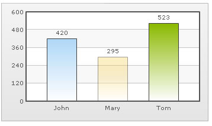
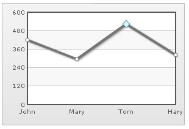
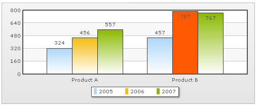

Highlighting Selective Data |
||||
FusionCharts v3 allows you to highlight selective data using a lot of ways. Here, we'll be discussing some of them including:
Let's see all of the above one by one. |
||||
| Highlighting a data set by changing its alpha | ||||
| Highlighting a data by changing its alpha is one of the simplest methods. Consider the XML below: | ||||
| <chart> <set label='John' value='420' /> <set label='Mary' value='295' alpha='50'/> <set label='Tom' value='523' /> </chart> |
||||
| Here, we've set the alpha of second column to 50 (on a scale of 0-100). When you now see this chart, you'll see that the column is semi-transparent making it the focus point. | ||||
|  | ||||
| Using dashed border to highlight data | ||||
| You can also highlight a data by setting it as dashed. Consider the XML below: | ||||
| <chart> <set label='John' value='420' /> <set label='Mary' value='295' dashed='1'/> <set label='Tom' value='523' /> </chart> |
||||
|
||||
| Using individual anchor properties on a line/area chart to highlight a data | ||||
| FusionCharts v3 allows you to set individual <set> level anchor properties too. Consider the following XML: | ||||
<chart showValues='0'> |
||||
| The above XML gives the following output on a line chart: | ||||
|  | ||||
| You can clearly see the highlighted anchor on the chart. | ||||
| Using individual color properties on a multi-series chart to highlight a single data | ||||
| FusionCharts v3 also allows you to specify <set> level color in a multi-series chart. Consider the XML below: | ||||
| <chart> <categories> <category label="Product A" /> <category label="Product B" /> </categories> <dataset SeriesName="2005"> <set value="324" /> <set value="457" /> </dataset> <dataset SeriesName="2006"> <set value="456" /> <set value="787" color='FF5904'/> </dataset> <dataset SeriesName="2007"> <set value="557" /> <set value="767" /> </dataset> </chart> |
||||
| In the above code, we've a multi-series XML. We're highlighting a single <set> by setting its color explicitly. When you now see this chart, you'll get the following output: | ||||
|  |